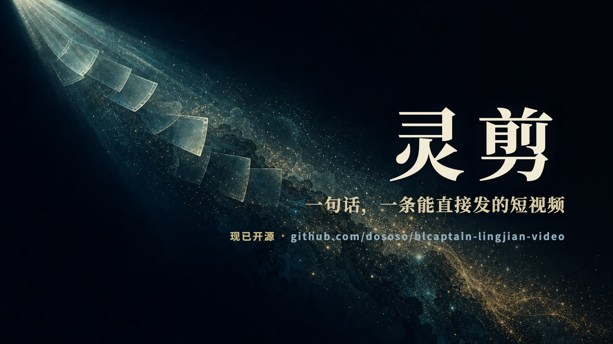
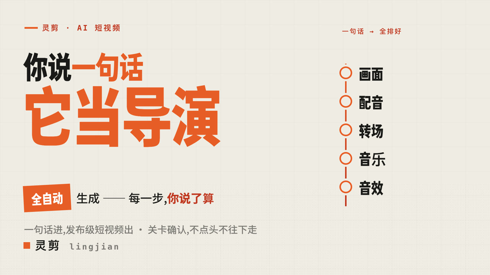
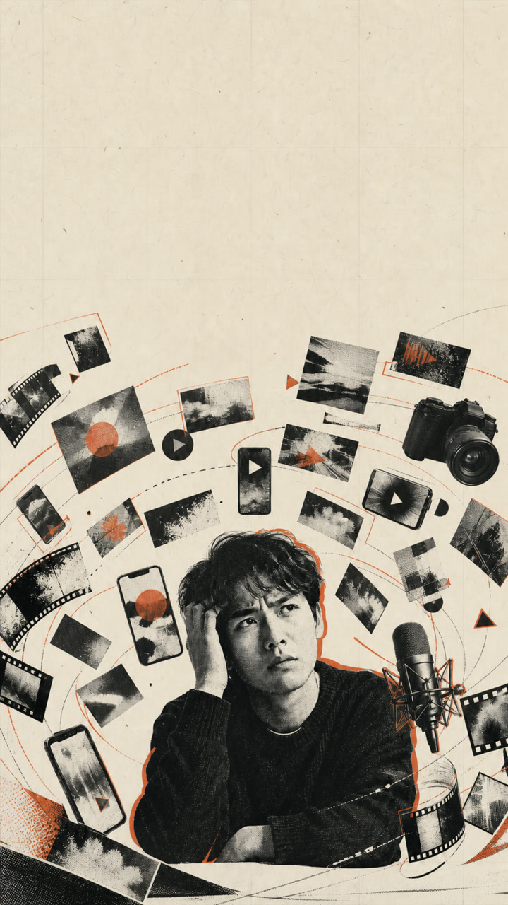
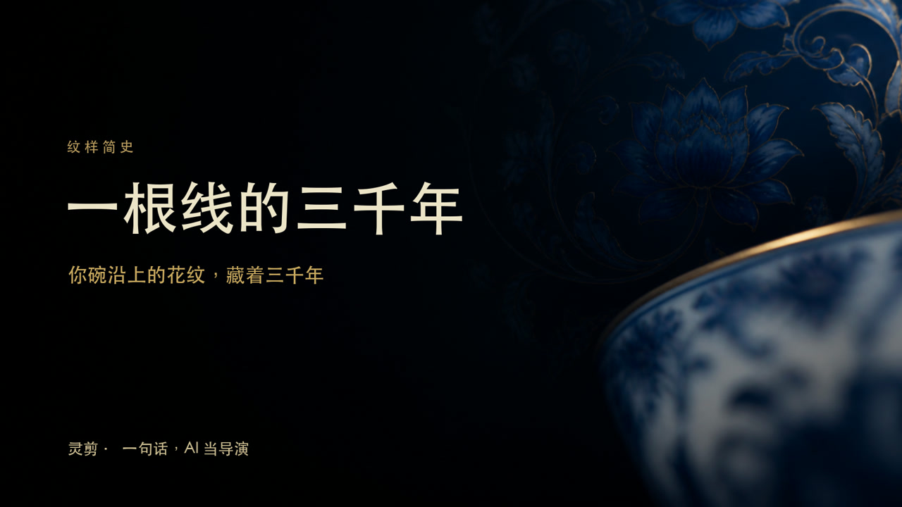
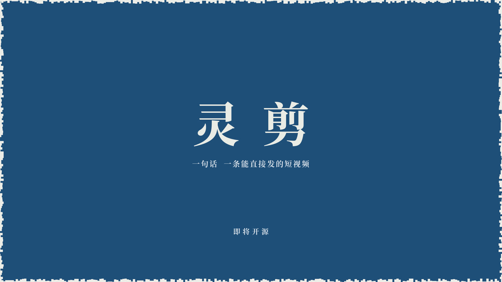

16:9
② DARK KEYNOTE · 暗场史诗
厚重、发布会仪式感。暗场高级质感，叙事弧线扛全片。
市面 AI「一句话出片」是黑箱：镜头不对，你只能重摇一次骰子。灵剪反过来：每一关先把候选摆给你看，你点头才继续。

主介绍片 · 一句话 → 发布级短视频 —— 本片由灵剪全流程产出（脚本 / 配音 / 画面 / 配乐 / 字幕 / 音效）。
底层能力（蓝图 · 关卡确认 · 渲染 · 门禁）跨风格通用；换的是视觉语言，不是重做。



